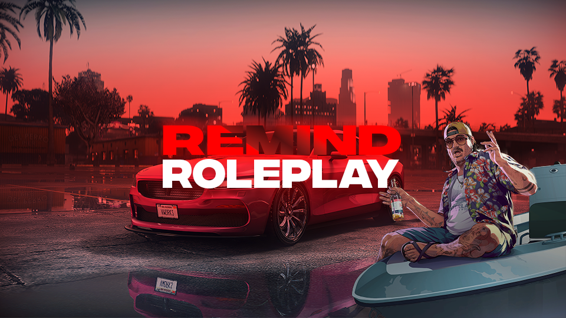

REMIND
ROLEPLAY
FIVEM SERVER
Eine klare Fraktionsstruktur, starke Einsatzrollen und eine Community, die auf ruhiges, sauberes und langfristiges Roleplay ausgelegt ist.
Professionelle Sicherheitsfraktionen im Aufbau
Auf Remind entstehen strukturierte Law-Enforcement-Fraktionen mit vollständigem Karrieresystem, transparenten Rängen und klaren Einstiegswegen. Die Fraktionsseiten folgen in Kürze.
Karriere
Vom Bewerber über Academy bis ins Command – strukturiert und nachvollziehbar.
Community
Koordinierte Events, laufende Storylines und direkte Kommunikation über Discord.
Jetzt bewerben
Starte deinen Einstieg über das Bewerbungsportal. Unser Team prüft jede Bewerbung individuell und meldet sich nach Sichtung bei dir.
Zum BewerbungsportalCommunity beitreten
Folge Ankündigungen, lerne andere Spieler kennen und bleibe über Server-Events und Fraktionsnews auf dem Laufenden.
Discord beitreten
Server Branding
Ein klarer Auftritt mit echten Remind-Assets
Statt generischer Platzhalter nutzt die Startseite die vorhandenen Server-Visuals direkt im Aufbau: Banner, Branding und Portal-Einstieg greifen visuell ineinander.

Brand Core
Remind Identität
Logo, Banner und Portal bilden jetzt eine einheitliche Sprache: hochwertig, ruhig, strukturiert und klar auf langfristiges Roleplay ausgelegt.
1 Stil
Website, Portal und Legal-Bereich sprechen dieselbe visuelle Sprache.
0 Brüche
Weniger harte Übergänge, mehr klare Sektionen und bewusste Hierarchie.
Server-Features
Roleplay mit klaren Systemen statt leerer Versprechen
Sicherheitsfraktionen werden mit vollständigen Organigrammen, Abteilungen und strukturiertem Recruiting ausgebaut.
Aufstiege, Spezialisierungen und Führungsrollen folgen klaren Strukturen statt zufälligen Einzelentscheidungen.
Individuelle Systeme für Jobs, Economy und Einsatzrollen sorgen für mehr Profil im Alltag.
Events, Ermittlungen und Fraktionslagen schaffen fortlaufende Geschichten statt isolierter Einzelmomente.
Administration, Discord und Bewerbungsportal sind als feste Einstiegspunkte direkt in die Startseite integriert.
Law Enforcement, zivile Berufe und Community-Events eröffnen unterschiedliche Spielstile und Karrierepfade.
Community
Ein Server für Spieler, die auf Stil, Disziplin und Spielraum setzen
Remind steht für ein faires, kreatives und visuell klares Roleplay-Erlebnis. Wer sich hier einbringt, findet keine überladenen Menüs, sondern eine nachvollziehbare Welt mit echten Rollen und festen Einstiegspunkten.
Sauberer Einstieg
Discord und das Bewerbungsportal führen direkt in die richtigen Bereiche.
Klare Standards
Struktur, Ausbildung und Support sind sichtbar organisiert und nicht nur behauptet.
Langfristige Geschichten
Karrieren, Ermittlungen und Serverlagen entwickeln sich über Zeit weiter.
Discord
Der schnellste Weg in Events, Support und neue Storylines
Auf Discord laufen Ankündigungen, Community-Abstimmungen, Eventhinweise und der direkte Kontakt zum Team zusammen. Wer aktiv mitspielen will, hat hier den kürzesten Weg in die laufende Welt.
Ankündigungen
Updates, Fraktionsnews und Eventtermine ohne Umwege.
Support
Schneller Kontakt für Fragen, Freischaltungen und technische Hilfe.
Community
Direkter Austausch mit anderen Spielern vor und nach den Sessions.
Team
Interessiert, Teil des Teams zu werden?
Wir suchen nach engagierten Admin, Moderator und Developer. Wenn du die Community unterstützen möchtest, bewirb dich jetzt!